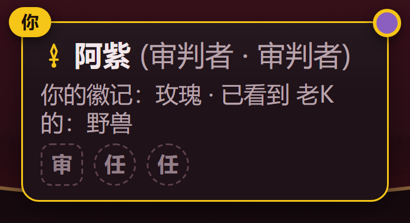
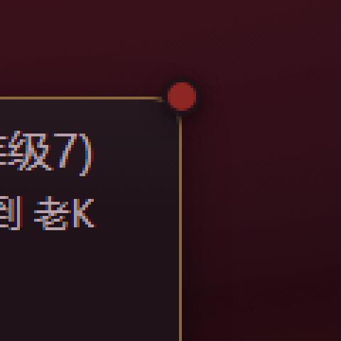
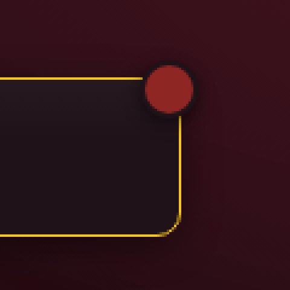

真实阵营色徽 · 两条 P1 详解
实现已提交 f0435e3，验收通过；以下两条是验收与评审共同标出的优化项，均未实施，等你拍板。
P1-1 审判者灰点对比偏低可读性
三个阵营里灰点最暗：对卡面的对比度只有 1.5:1，不到玫红（2.1:1）的四分之三、兽蓝（2.8:1）的一半，也低于 WCAG 非文本 3:1 的建议线。低亮度屏上它可能整颗"消失"——审判者玩家会疑惑"为什么我没有色徽"。
真实尺寸（14px）× 真实卡面 · 数字 = 对卡面对比度
玫红2.1:1
兽蓝2.8:1
灰1.5:1
01:12:13:1 ←建议线
01:12:13:1
01:12:13:1
实际渲染 ≈10px（桌面圆桌 0.7 缩放）+ 低亮度模拟（brightness 0.55）
玫红
兽蓝
灰
灰点在低亮度档已接近融入卡面；玫红/兽蓝仍可辨——色相差在兜底，而灰没有色相可依赖。
实拍：审判者房（灰点 + 身份文字"审判者" + 会骗人的徽记行）

为什么当初会这样：你拍板 Q3c「审判者不加第四色，复用灰 token」——灰 token 原生消费者（线索槽"？"、备忘灰块）都自带字形，不依赖底色对比；色徽是第一个"纯靠底色说话"的灰消费者，这个盲区拍板时不存在，是新用途暴露出来的。
方案 A · 描边环提亮（推荐）
- 只给审判者色徽把描边环从卡面色换成 --mark-gray-border（灰紫，对卡面 2.1:1），轮廓整体抬到 ≈2:1
- 零外溢：槽位、备忘色板、memo 角标一概不动；Q3c"复用灰 token"原样成立
- 若实测仍弱，再升级到方案 B
.true-color-badge.order { border-color: var(--mark-gray-border); }
方案 B · 共享灰提亮一档
- --mark-gray-bg #46303a → #5C4150，底色对比 1.5 → 2.0:1
- 波及全部灰消费者：线索槽"？"、备忘灰块、memo 灰角标——外观整体变浅一档
- 一步到位，但改动面最大；要 3:1 得提到 #7a5a6e，视觉变化明显
--mark-gray-bg: #5c4150;
方案 C · 维持现状
- 色徽本来就是冗余通道：旁边身份文字明写"审判者"，title/aria 也有全称
- 灰=「不属于任何家族」，低存在感在语义上甚至说得通
- 代价：低亮度屏上"看不见自己的色徽"的困惑依旧
/* 不改代码 */
P1-2 同角双圆点的心智混淆语义
别人卡的备忘角标（24px，开局被右邻徽记色自动填色）和自己卡的真实阵营色徽（14px）同为右上角圆形、同一套"深环+投影"语言——rose 房里会同屏同色。风险：把"自己卡上=事实"过度泛化成"右上角颜色=真实阵营"，把会骗人的线索读成事实。
老K 的卡（别人的卡）：右上角是备忘角标——24px、带"玫"字、开局被你看到的他的徽记自动填色、可清空改判。它是猜测，而且源头（徽记）会骗人（小丑徽记恒为敌对家族）。
阿紫 (玫瑰家族 · 等级7)
你的徽记：玫瑰
7
阿紫的卡（自己卡）：右上角是真实阵营色徽——14px、无字、恒在、引擎事实。面积只有备忘角标的 1/3，但同角同语言。
实拍对照（rose 房，两角同屏同色玫红）

自己卡角：真实阵营色徽（事实）

老K卡角：备忘角标（猜测，开局自动填色）
已有的分辨线索（为什么不算 P0）
| 备忘角标（别人卡） | 真实阵营色徽（自己卡） |
|---|
| 尺寸 | 24px（面积 2.9×） | 14px |
| 字形 | 有（玫/兽/数字/审）或虚线空态 | 无，纯色点 |
| 归属 | 只出现在别人的卡 | 只出现在自己的卡 |
| 语义 | 我的猜测，可清空，仅本设备 | 引擎事实，恒在 |
但图例里完全没有备忘角标的说明（helpContent 零提及）——"猜"的那半边全靠玩家自己悟，这才是混淆的真正缺口。
换个角度看，同角未必是坏事：右上角颜色可以读作"这张卡上我对阵营的认知"——别人的卡是猜测，自己的卡恰好是事实。同一语言、位置区分归属，本身自洽；要修的不是位置，是把"事实 vs 猜测"讲出来。
方案 甲 · 色徽移到左上角
- 物理隔离，混淆根除
- 代价：推翻 Q1a"与备忘角标同位对称"的拍板；左右两角各一种圆点，卡片语言变碎
方案 乙 · 备忘角标改样式区分
- 如虚线环/半透明表示"猜测"——改动落在既有功能（ADR 0004）上，波及备忘色板、选择器、已养成习惯
- 直接撞上"备忘角标不动"的拍板
方案 丙 · 维持现状 + 一行文案消歧（推荐）
- 在「真实阵营色徽」短注末尾补一句，把两侧语义一次讲透：
别人卡右上角的同款圆点是你记的备忘（猜测，
开局由你看到的徽记填色），不是事实。
- 顺手补上图例对备忘角标零说明的缺口；零视觉改动、零回归风险
建议汇总等你拍板
P1-1 → 方案 A：色徽描边环改用 --mark-gray-border。一行 CSS、token 纯净、Q3c 不破、零波及；审判者轮廓对比 1.5 → ≈2:1。实测仍弱再升级 B。
P1-2 → 方案 丙：位置不动、备忘不动，图例短注加一句消歧——补的正好是"备忘角标零说明"这个真缺口。
两条各一行改动；你说"照此实施"我就做（P1-1 含重截图复核，P1-2 含 helpContent 测试同步）。